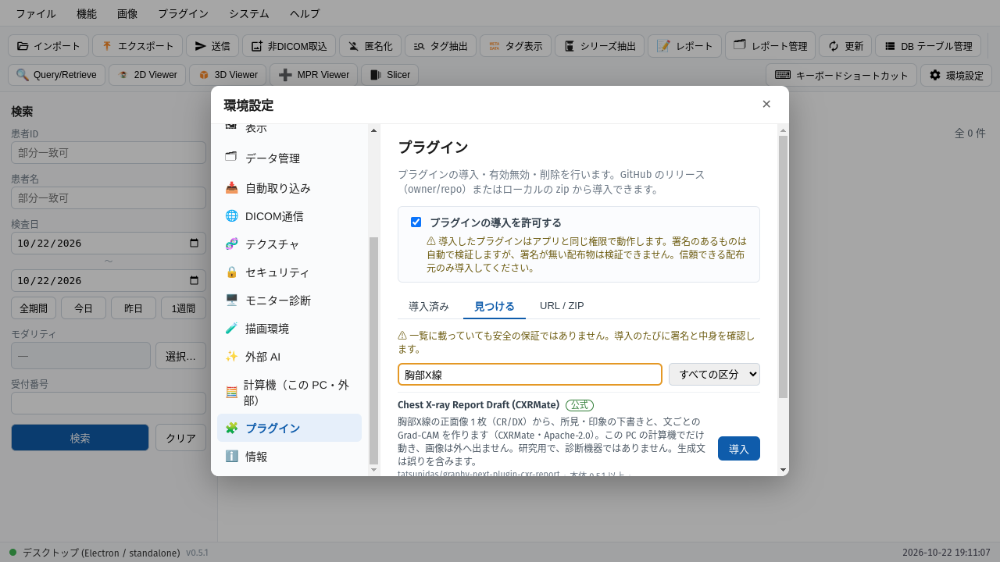
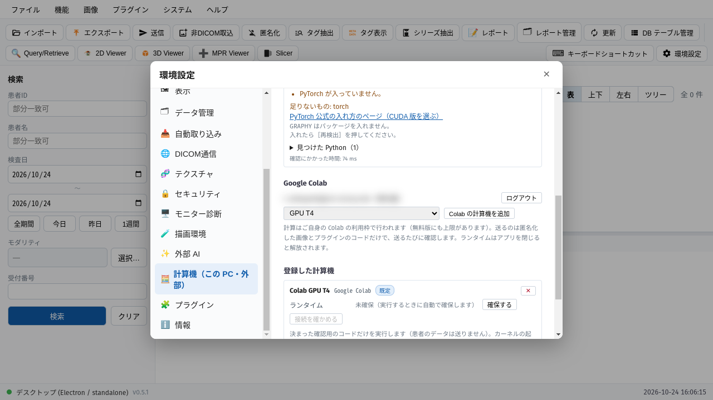
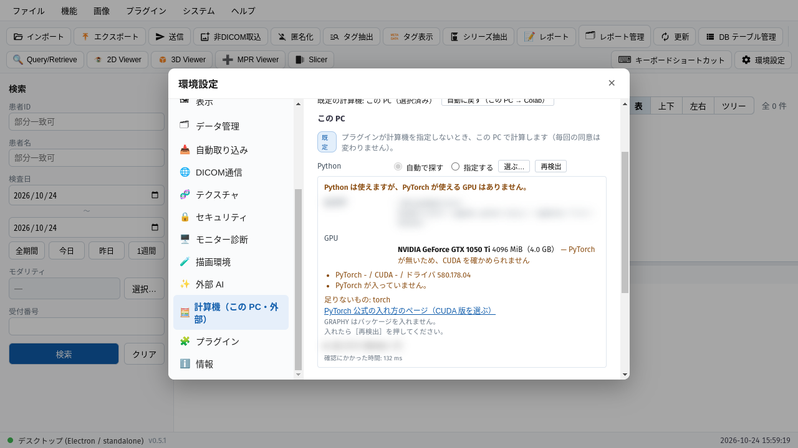
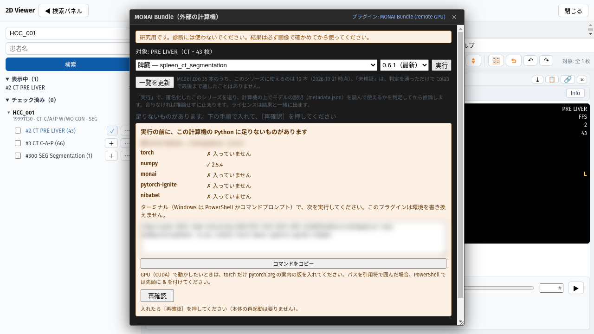
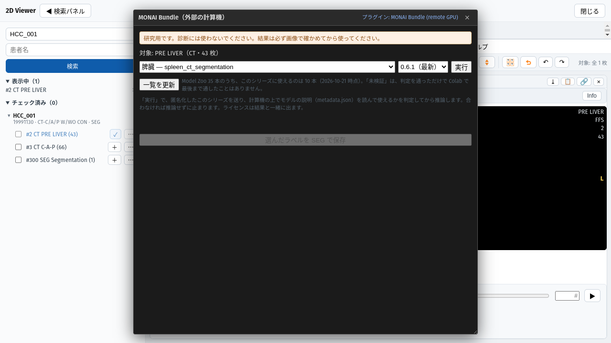
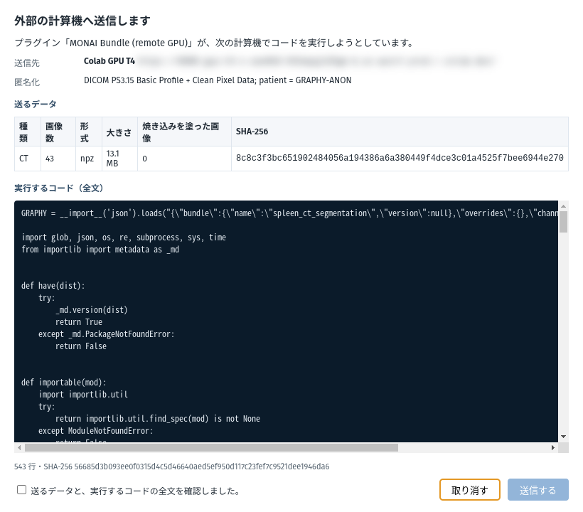
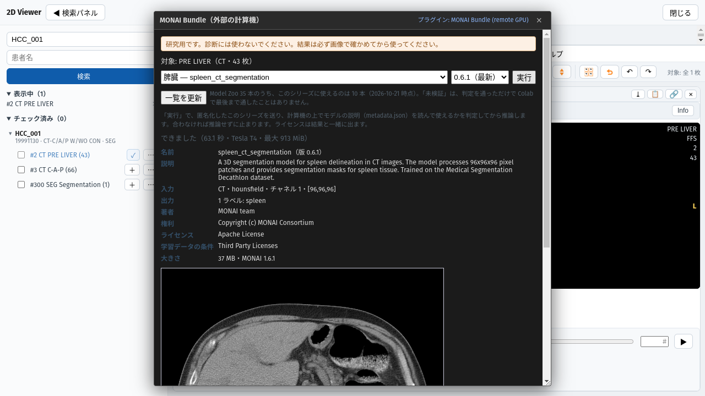
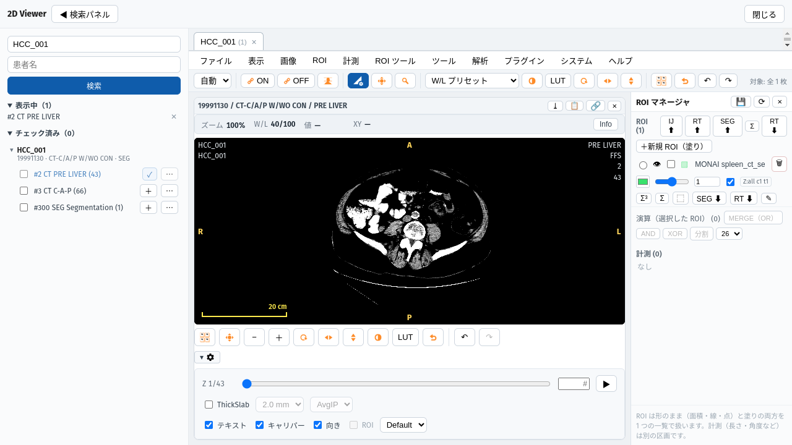
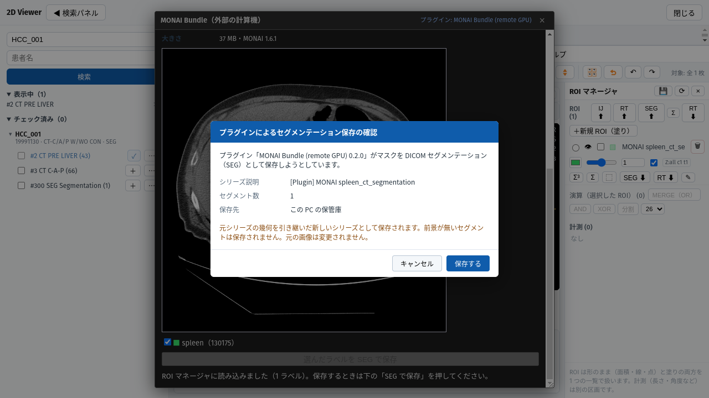
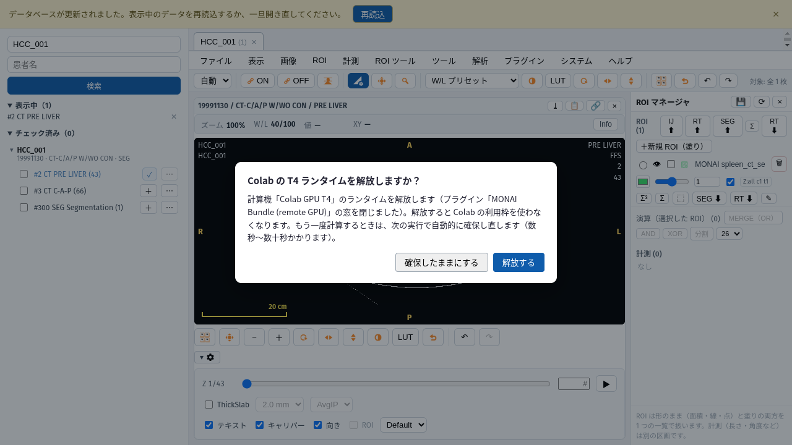

GRAPHY-NEXT / MONAI BUNDLE (REMOTE GPU) 0.2.0
CT・MR のシリーズから、臓器を自動で塗り分けます。計算は外部の GPU（Google Colab など）で行い、結果は ROI マネージャで確かめて、DICOM SEG として保存します。
プラグインを入れる設定 ＞ プラグイン
GPU の設定Google Colab ／ この PC ／ 自分の Jupyter
実行と同意何が外へ送られるか
結果を確かめる下見・ROI マネージャ
SEG の意味と保存
モデルの選び方・困ったとき・既知の制限
00 / はじめに
GRAPHY-Next 0.4.0 以降（デスクトップ版）この冊子の画面は 0.5.1 です
MONAI Bundle プラグイン 0.2.0公式プラグイン。署名つきで配布
Google アカウント（Colab を使う場合）無料版にも利用枠の上限があります
研究用です。診断には使わないでください。結果は必ず画像で確かめてください
送るのは、本体が匿名化したシリーズだけですプラグインは画素を外へ送る口を持ちません
モデルは MONAI Model Zoo の公開モデルですライセンスはモデルごとに違います（非商用のものがあります）
01 / 環境設定 ＞ プラグイン ＞ 見つける

「プラグインの導入を許可する」を、ご自身で入れます（既定は許可しません）
「見つける」に、公式の索引の一覧が出ます
「MONAI」で絞り込みます
「導入」。導入のたびに、署名と中身を確かめます。信頼欄が verified なら公式の署名です
この図は別の公式プラグインの一覧です。MONAI も同じ手順で入ります。
ネットワークの無い環境では「zip から導入」も使えます（注意は p.13）。
02 / 環境設定 ＞ 計算機
おすすめ。自分のパソコンに GPU や Python の用意が要りません。
Google でログイン → GPU を選んで追加
計算はご自身の Colab の利用枠で行われます
パッケージは Colab 側で自動で入ります
この PC の Python と GPU を使います。
Python と PyTorch・MONAI などが要ります
足りないものは、実行の前に表と導入コマンドで案内します
環境は書き換えません（入れるのはご自身）
自分で立てた Jupyter Server（社内の GPU サーバーなど）を使います。
設定の「計算機を追加」から登録します
必要なパッケージは「この PC」と同じです。足りないものは同じ枠で案内します
この冊子では画面を省略します
計算機を 1 つも登録していないときは、最初の「実行」で、Colab の GPU T4 が自動で登録されます（Colab にログインしている場合）。
どの計算機でも、実行のたびに「何を・どこへ送るか」の同意画面が出ます。承諾するまで何も送られません。
02 / 環境設定 ＞ 計算機 ＞ Google Colab

「Google でログイン」→ ブラウザが開くので、Colab を使うアカウントでログイン。アカウント名がここに出ます（図ではぼかしています）
GPU の種類を選びます。まずは GPU T4。プランで使えないものには「このプランでは使えません」と出ます
「Colab の計算機を追加」
「登録した計算機」に出ます。既定 の印がついた計算機が、プラグインの実行に使われます
Colab の計算機の実体（ランタイム）は、実行するときに自動で確保します（数秒〜数十秒）。
02 / この PC・自分の Jupyter ＞ 足りないものの案内

設定では、この PC の Python と GPU を見分けた結果が出ます
環境を変えたら「再検出」

最初の「実行」で、画像を送らない確認が先に走ります。足りないものを表にします
使われる Python を指した pip install を出します（コピーして実行）
入れたら「再確認」。アプリの再起動は要りません
GRAPHY はパッケージを自動では入れません。GPU（CUDA）で動かすときは、PyTorch だけ公式サイトの案内の版を入れてください。図は、何も入っていない Python の例です。
03 / 2D ビューア ＞ 解析 ＞ AI ＞ MONAI Bundle (remote GPU)

モデルを選びます。このシリーズに使えるものだけが選べます。まずは軽い 脾臓（spleen_ct_segmentation） が試しやすいです
版（既定は最新）
「実行」。次の同意画面で、送る内容を確かめます
計算機の上で、モデルの説明（metadata.json）からこのシリーズに使えるかを判定します。合わなければ、推論せずに止まり、理由が出ます。
⚠ モデルの説明は作者の自己申告です。止めるのは、明らかに合わないときだけです。
03 / 同意画面（実行のたびに出ます）

送り先。計算機の名前と URL です（この図では URL をぼかしています）
送るデータ。枚数・形式・大きさと、焼き込み文字を塗った枚数。患者は匿名（GRAPHY-ANON）に置き換わります
実行するコードの全文。計算機の上で動くプログラムを、すべて読めます
確認したらチェックを入れて「送信」。やめるときは「キャンセル」で、何も送られません
最初の実行では、画像を送らない確認の同意が先に 1 回出ます（Colab では何も確かめずに通ります）。
04 / 結果を確かめる

終わると、時間・GPU・モデルの説明が出ます。この例は 63 秒（Tesla T4）
下見。塗られた臓器が見えます。ラベル横の数はボクセル数
窓を下へ動かすと、保存するラベルのチェックと「SEG で保存」があります（p.11）

結果は ROI マネージャにも臓器名つきで読み込まれます（ROI ツール ＞ ROI マネージャ）
スライスを動かして、塗りが臓器に合っているかを必ず確かめてください
05 / DICOM SEG とは
ラベル番号と臓器名の対応は、モデルごとに違います。保存された SEG には、臓器名がセグメント名として入ります。
前景が無い（何も塗られなかった）ラベルは、保存されません。保存の確認画面に、セグメント数が出ます。
SEG は DICOM の標準の形式です。元のシリーズと一緒に開けるビューアで、塗りを重ねて見られます。
結果は研究用です。SEG に保存しても、診断に使える結果になるわけではありません。
SEG の中の「アルゴリズムの種類」は、すべて MANUAL と書かれます（本体の既定）。AI が作ったことは、シリーズ説明の [Plugin] で見分けてください。
05 / 保存と、終わるとき

確認画面で、シリーズ説明（[Plugin] MONAI …）・セグメント数・保存先を確かめて「保存する」。保存先はこの PC の保管庫です
保存すると「SEG を保存しました」と出て、一覧に新しいシリーズが増えます（再読込で更新）。元の画像は変わりません。

プラグインの窓を閉じると、Colab のランタイムを解放するか聞かれます。続けて使わないなら「解放する」（Colab の利用枠を使わなくなります）
解放しても、次の実行で自動で確保し直します（数秒〜数十秒）。
06 / モデルの選び方
| モデル | 対象 | ラベル | GPU の最大（T4） |
|---|---|---|---|
| spleen_ct_segmentation | CT | 脾臓 | 0.9 GB |
| wholeBody_ct_segmentation | CT | 全身 104 臓器 | 8.4 GB |
| swin_unetr_btcv_segmentation | CT | 腹部 13 臓器 | 5.4 GB |
| multi_organ_segmentation | CT | 腹部 7 臓器 | 5.8 GB |
| pancreas_ct_dints_segmentation | CT | 膵臓・膵腫瘍 | 3.4 GB |
| renalStructures_UNEST_segmentation | 造影 CT | 腎臓の構造 | 5.9 GB |
| prostate_mri_anatomy | T2 MR | 前立腺 | 4.0 GB |
| wholeBrainSeg_Large_UNEST_segmentation | T1 MR（MNI 空間） | 脳 133 領域 | 11.5 GB |
「未検証」は、判定を通っただけで、Colab で最後まで通したことがない、という意味です。試せますが、動く保証はありません。
一覧に無い Bundle も「その他」から名前で指定できます（Model Zoo の名前、または Hugging Face の 組織/名前）。
設定値・複数チャネル（脳腫瘍など）・ラベル番号と点（vista3d など）を渡せるモデルもあります。画面に入力欄が出ます。
ライセンスはモデルごとに違います（学習データの条件で、非商用に限られるものがあります）。結果の画面で確かめてください。
06 / 困ったとき・既知の制限
| 出たこと | 対処 |
|---|---|
| 足りないものの表が出た | 表の pip install をターミナルで実行 → 「再確認」 |
| Bundle が追加のパッケージを求めた | 枠に出た名前を、同じ Python に入れて、もう一度「実行」 |
| Jupyter などを後から入れたのに「local-unavailable」 | GRAPHY を再起動（次の版で直す予定です） |
| Colab で GPU の空きが無い／利用枠を使い切った | 時間をおく、別の種類を選ぶ |
| GPU のメモリ不足（CUDA out of memory） | 軽いモデルにする。設定値で解像度を下げられるモデルもあります |
| 署名つきで入れたプラグインを zip で入れ直せない | 本体の次の版から、zip と同名の .minisig も一緒に選びます。0.5.1 では、いったん削除してから入れます |
脾臓（10 例・独立データ）: Dice の平均 0.858（最小 0.536、最大 0.949）。10 例すべてで、予測の体積が基準より小さい傾向1 例は脾臓の一部しか拾えませんでした。原因は未確認
全身 104 臓器（wholeBody）: 既定の設定では、T4 で10 例すべて失敗。確認できた原因は、メモリ不足の 1 例だけです低解像度の設定では 7 例が完走。結果はばらつきます
向き・体積の検証は、一部のモデルだけです。ほかのモデルは、必ず画像で確かめてください